왜 DB 앞에 줄을 세워야 할까요
영상은 설 명절 KTX(Korea Train eXpress) 예매 화면으로 시작해요. 발표자도 오전 7시에 기다렸다가 바로 눌렀는데, 화면 가운데 '나의 대기 순서'가 524300이었어요. 그 아래 '내 뒤의 대기자 수'는 1983980이에요. 앞뒤를 합치면 250만 명 가까이가 같은 순간에 몰린 거예요.
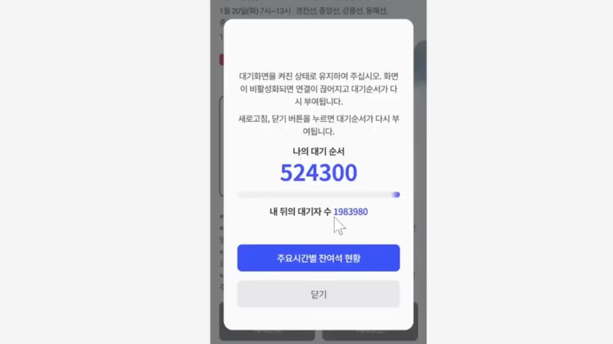
API를 늘려도 DB에서 막혀요
가장 단순한 백엔드는 API(Application Programming Interface) 한 대가 DB와 붙어 있는 구조예요. 사용자가 늘면 API를 여러 대로 늘리고, 앞에 로드 밸런서나 API 게이트웨이를 둬서 부하를 나눠요. 그런데 예매처럼 순간에 수백만 요청이 오면 API를 아무리 스케일 아웃해도 결국 모든 요청이 DB로 모여요.
예매 데이터는 정합성과 무결성이 중요해서 NoSQL보다 RDB를 써요. 그런데 RDB는 스케일 아웃이 어렵고, 스케일 업은 비용이 크게 늘어요. 그렇게 키워도 수백만 동시 요청은 버티기 힘들어요. 그래서 구조 자체를 바꿔야 한다는 게 영상의 출발점이에요.
선착순 예매가 지켜야 할 네 가지
발표자는 화이트보드에 요구사항을 네 개로 적어요. 왼쪽부터 대량 동시 트래픽, 순서 보장, 초과 예매 금지, 중복 예매 금지예요.
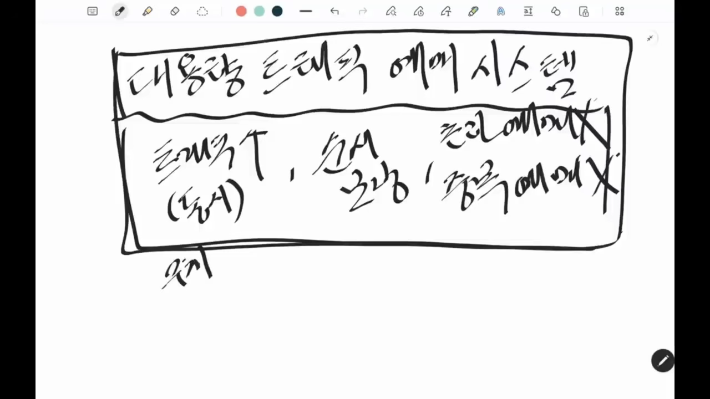
| 요구사항 | 무슨 뜻인가요 | 영상이 쓰는 해법 |
|---|---|---|
| 대량 트래픽 | 수십만~수백만 명이 동시에 요청해요 | DB 앞 Redis 대기열 |
| 순서 보장 | 먼저 온 사람이 먼저 예매해요 | 타임스탬프 점수로 정렬하는 Sorted Set |
| 초과 예매 금지 | 열차 좌석 수를 넘겨 팔면 안 돼요 | Lua 스크립트로 원자적 차감 |
| 중복 예매 금지 | 다른 사람이 같은 자리·같은 시간대를 잡으면 안 돼요 | 원자적 차감, 좌석 지정 시 SET NX 선점 |
세 단계 설계: 대기열 등록과 입장
발표자는 '모든 걸 다 말할 순 없으니 추상화해서 핵심만' 보겠다고 하고, 문제를 세 단계로 나눠요. 화이트보드 왼쪽 ① 대기열 등록 아래에 사람이 길게 줄을 선 모양을 그리고, 거기서 화살표로 ② 예매 입장, 그 오른쪽에 ③ 예매 처리를 적어요.
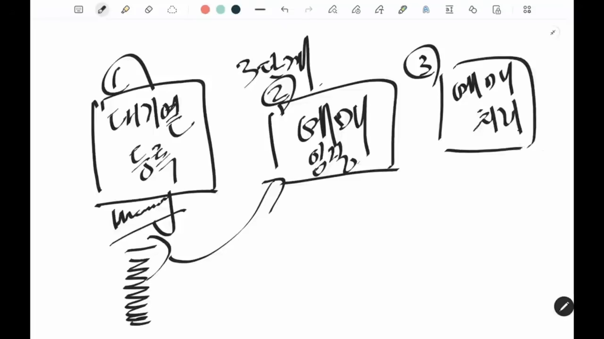
① 대기열: Redis Sorted Set에 줄 세우기
요청은 DB 대신 인메모리 대기열로 가요. 발표자는 요즘 대기열에 가장 잘 맞는 솔루션으로 Redis를 꼽고, 그중 Sorted Set(ZSet) 자료구조를 써요.
KTX는 로그인 없이 바로 '예약 접수' 버튼을 누르게 해요. 그래서 API가 UUID를 하나 만들어 사용자 식별값으로 써요. 이 UUID를 멤버로, 들어온 시각(타임스탬프)을 점수로 ZSet에 넣으면 들어온 순서대로 자동 정렬돼요. API는 UUID를 돌려주고, 브라우저는 다음 요청부터 그 UUID를 들고 와요. Redis는 메모리 기반이라 빠르고, 단일 서버가 아니라 클러스터로 구성해요.
그다음부터 브라우저는 내 대기 상태를 계속 확인해요. 방법은 폴링, SSE(Server-Sent Events), 웹소켓 중 하나인데, 보통 폴링을 많이 써요. 웹소켓은 네트워크 장비 단에서 거부될 가능성도 있기 때문이에요. 이 선택은 맨 마지막 편에서 길게 다시 다뤄요. 내 순번은 ZRANK, 전체 대기자 수는 ZCARD로 바로 꺼낼 수 있어요.
② 입장: 스케줄러가 뒷단 처리량만큼 꺼내요
뒷단에서는 스케줄러가 1초에 한 번쯤 돌면서 대기열 앞에서부터 몇 명을 꺼내요. 몇 명인지는 예매 처리 시스템의 TPS로 정해요. 예를 들어 뒷단이 초당 100건을 처리할 수 있다면 여유를 두고 60~70건 정도만 꺼내요. 그 숫자를 정하려면 미리 부하 테스트가 돼 있어야 해요.
꺼낸 사람은 Active User라는 '입장 가능' 목록에 넣어요. 이것도 메모리라 빨라요. 폴링하던 사용자가 Active User에 들어 있으면 예매 API로 넘어가요. 대기열 서버와 예매 서버가 다른 API라는 점도 눈여겨볼 만해요.
아래 그림은 발표자가 마지막에 다시 정리한 화이트보드를 깔끔하게 옮긴 거예요. 위 줄이 대기열 서버, 아래 줄이 예매 서버예요.
화이트보드 원본은 이렇게 생겼어요. 위 상자에 '① 대기열 서버'와 Redis(대기열, Active User), 오른쪽 원에 스케줄러가 있고, 아래 상자에 '예매 서버'와 Redis(잔여 좌석, Lua Script, 차감), 그 오른쪽에 MQ와 Worker, RDB가 있어요.
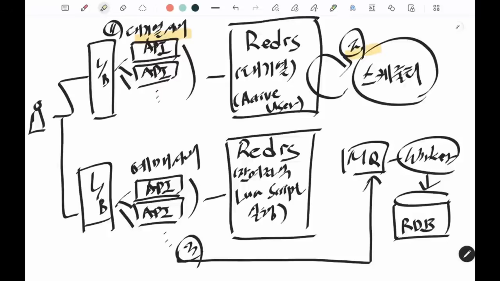
입장한 뒤 아무것도 안 하는 사람은 TTL로 빼요
스케줄러가 Active User에 넣을 때 타임아웃을 함께 넣어요. 입장시켰는데 브라우저를 켜 둔 채 떠난 사람이나 너무 오래 걸리는 사람을 자동으로 빼기 위해서예요. KTX는 3분이었어요. 3분이 지나면 Active User에서 사라지고, 폴링 API가 확인할 때 없으니 튕겨 내면 돼요.
Redis를 대기열용과 예매용 두 대로 나눌지, 큰 클러스터 하나로 둘지, Active User를 어디에 둘지는 상황에 따라 달라요. 발표자는 이런 세부보다 '대기열, 입장, 예매 처리'라는 세 단계의 뼈대가 중요하다고 강조해요.
예매 처리: Lua 스크립트로 좌석 차감
입장한 사용자는 이제 UI(User Interface)에서 인원과 행선지를 고르고 '예매하기'를 눌러요. KTX는 시간대별로 좌석 N개를 파는 구조라서, 이 순간에 총 좌석보다 많이 팔리지 않게 동시성을 제어해야 해요.
RDB 락 대신 Redis Lua 스크립트
RDB 락을 쓸 수도 있지만, 그러면 DB가 다시 부하를 받아요. 그래서 여기서도 Redis의 원자적 연산을 써요. 잔여 좌석 수는 미리 Redis에 넣어 둬요. 그리고 Lua 스크립트로 이런 로직을 짜요.
- 현재 잔여 좌석을 조회해요
- 잔여 좌석이 요청 좌석 수보다 많거나 같으면 그만큼 빼고 성공을 돌려줘요
- 부족하면 실패로 처리해요 — 누군가 조금 늦게 와서 그 시간대 좌석이 모자란 경우예요.
Lua 스크립트는 통째로 원자적으로 실행돼요. 조회와 차감 사이에 다른 요청이 끼어들 수 없어서, 동시에 여러 요청이 와도 안전해요. 왜 단순한 차감 명령이 아니라 굳이 스크립트인지는 댓글 답변 편에서 한 번 더 나와요. 아래에서 직접 돌려 볼 수 있어요.
DECRBY만 쓸 때: -
Lua 스크립트: -
- 영상의 예처럼 잔여 2석, 요청 3석에 두세요.
DECRBY는 -1이 되고, 이 마이너스를 되돌리는 처리가 따로 필요해져요. - 요청을 1석으로 내려 보세요. 한 장씩만 팔 때는 두 방식 결과가 같아서
DECR로 충분하다는 말이 이해돼요. - 잔여를 0으로 두면 Lua 쪽은 숫자를 건드리지 않고 실패만 돌려줘요.
성공한 요청만 DB로, 필요하면 MQ를 한 번 더
Lua 스크립트가 '예약해도 돼'라는 신호를 주면 그제야 API가 RDB에 저장해요. 부하를 더 줄이고 싶으면 그 사이에 MQ를 둬요. API는 MQ에 쓰고 바로 응답하고, 뒷단 워커가 꺼내 RDB에 저장해요. 다만 앞에서 스케줄러가 이미 뒷단이 받을 만큼만 보내므로, RDB에 바로 넣어도 큰 무리가 없을 수 있다고 해요.
결제는 뒤로 미뤄요
발표자는 이 과정에서 복잡한 건 최대한 덜어 내라고 해요. KTX도 이 단계에서는 결제를 받지 않고 좌석 예매까지만 해요. 결제를 넣으면 결제했다가 돌아오는 과정의 실패와 예외 처리가 크게 늘어요. 결제를 뒤로 미루면 결제 요청은 좌석 수만큼만 오니, 수십만~수백만이 아닌 훨씬 가벼운 시스템이 돼요.
끝으로 이런 시스템은 오픈 전에 봇으로 전 과정을 돌리는 부하 테스트를 충분히 했을 거라고 덧붙여요.
댓글 질문 ①: 대기열을 어떻게 굴리나요
본편을 올린 다음 날, 발표자는 댓글에 달린 질문에 답하는 영상을 따로 찍어요. 화면은 유튜브 댓글창과 앞의 화이트보드를 오가요. 여기서는 대기열을 굴리는 방식에 관한 질문을 묶었어요.
입장한 사람이 계속 쌓이지 않나요?
스케줄러가 1초마다 꺼내 보내는데, 입장한 사람이 예매를 안 끝내면 Active User가 계속 불어나지 않느냐는 질문이에요. 발표자는 방어 장치를 네 겹으로 설명해요.
- TTL이 지나면 Active User에서 빠져요.
- 사람마다 로그인, 행선지 선택, 시간 선택 속도가 달라서 모두가 한 번에 '예매하기'를 누를 가능성은 낮아요.
- 우연히 한꺼번에 눌러도 Lua 스크립트가 잔여 좌석만큼만 성공시켜요. DB로 가는 건 그만큼뿐이에요.
- 마지막으로 DB 앞에 MQ를 두면 한 번 더 버퍼가 돼요.
대기 순번은 어떤 통신으로 보여 주나요?
소켓, SSE, 폴링 중 무엇이냐는 질문에 발표자는 폴링을 권해요. 소켓과 SSE는 연결을 유지해야 해서 서버가 수십만 개의 연결을 들고 있어야 해요. 그런데 요구사항은 '지금 내가 몇 번째인지 주기적으로 알고 싶다'는 아주 단순한 것이라, 완전한 실시간 연결은 필요 없어요.
폴링 주기에도 요령이 있어요. 대기자가 많을 땐 5초에 한 번쯤 묻고, 입장이 가까워질수록 짧게 물어요. 모두가 같은 주기로 물어 부하가 한 시점에 몰릴 걱정이 있으면 지터를 써서 사용자마다 주기를 조금씩 흩어요.
왜 굳이 Lua 스크립트인가요?
인메모리 제어인데 왜 스크립트 언어를 쓰느냐는 질문이에요. '잔여 좌석이 있는지 확인'과 '있으면 차감' 사이에는 아주 짧은 틈이 생길 수 있고, 그 틈에 다른 요청이 들어오면 안 돼요. Redis의 DECR만으로 되는 건 딱 한 장씩 팔 때예요. KTX처럼 n장을 한 번에 사면, 2석 남았는데 3석을 빼서 -1이 되고 이를 되돌리는 처리가 필요해져요. 그래서 확인과 차감을 하나의 Lua 스크립트로 묶었다고 해요. 앞 섹션의 '직접 돌려 보기'가 바로 이 상황이에요.
대기 중에 브라우저를 닫으면 하트비트로 지워야 하지 않나요?
대기열에 있다가 사용자가 떠나도 서버는 모르니, TTL을 폴링 주기보다 조금 길게 걸고 폴링할 때마다 갱신하자는 제안이에요. 전형적인 하트비트 패턴이죠. 발표자는 두 가지 이유로 지금 설계에서는 하지 않는다고 답해요.
| 이유 | 내용 |
|---|---|
| 기술적 제약 | ZSet은 집합 전체에만 TTL을 걸 수 있어요. 멤버마다 따로 걸려면 사용자마다 키를 하나씩 더 만들어야 하고, 대용량에서는 수백만 개의 키가 부담이에요. |
| 성능 | 지금 폴링은 ZSet을 읽기만 해요. 갱신을 넣으면 폴링마다 쓰기가 추가되고, 그 쓰기 부하가 더 중요한 입장 처리와 예매에 영향을 줄 수 있어요. |
그럼 떠난 사람을 서버가 모르면 무슨 일이 생길까요. 발표자는 그 사람이 지나가는 길을 끝까지 따라가 봐요. 아래 그림은 그 설명을 옮긴 거예요.
결론은 비용 비교예요. 수십만~수백만 명의 생존을 매번 확인하는 것보다, 허수 몇 명을 Active User로 올려 두고 TTL로 지우는 편이 싸요. 하트비트는 채팅 서비스나 게임 서버의 접속 유지에는 꼭 필요한 기법이지만, 대기열에서는 오버헤드가 될 수 있다고 정리해요.
그 밖에 나온 개선 포인트
패킷이 버려지지 않게 랜카드, OS(Operating System) 커널의 큐 백로그, Nginx 커넥션 수를 튜닝하자는 댓글에는, 소프트웨어를 아무리 고쳐도 지나가는 통로가 좁으면 소용없다며 동의해요. 다만 랜카드와 커널은 자기 능력 밖이라고 솔직하게 말해요. Redis 접근에 WebFlux와 Netty를 썼다는 댓글에는, 대기열은 CPU(Central Processing Unit)보다 I/O 대기가 병목이라 논블로킹으로 짜면 적은 스레드로 많은 요청을 받을 수 있다고 답해요.
댓글 질문 ②: 좌석 지정, 비행기 모드, 폴링 구현
댓글 답변 영상의 후반부예요. 실제 예매 화면에서 겪은 일과, 직접 구현할 때의 질문이 이어져요.
비행기 모드를 켰다 끄면 대기열이 뚫린다던데요?
발표자는 질문을 정확히 이해하진 못했다고 먼저 말해요. '대기 중에 비행기 모드를 켰다 풀면 바로 예매 화면으로 들어간다'는 뜻이라면 두 가지 가능성을 들어요.
- 폴링이 몇 번 실패하면 프런트가 대기열 장애로 판단하고, 시스템이 죽은 것처럼 보이느니 예약 페이지로 보내는 일종의 페일오버 로직이 있을 수 있어요.
- 비행기 모드인 사이에 마침 서버에서 입장 가능으로 바뀌었고, 모드를 풀자 정상적으로 들어간 우연일 수도 있어요.
매번 그렇게 된다면 로직 오류일 가능성이 크다고 봐요.
특정 자리까지 고르게 하려면?
그날 KTX 예매에는 자리 선택이 없었어요. 출발 시간과 좌석 수만으로 예매를 끝내고, 자리 지정과 결제는 나중에 해요. 대용량 구간에서 복잡함을 빼려고 일부러 나눈 것으로 봐요. 자리 지정과 결제는 좌석 수만큼만 들어오니 대용량이 아니에요.
만약 특정 자리까지 골라야 한다면 '좌석 선점'을 추가해요. Redis의 SET NX를 써요.
- 키는 좌석 번호, 값은 사용자 식별값으로 해요.
- TTL은 반드시 줘요.
- 사용자가 좌석을 고르는 순간
SET NX로 선점해요. 이미 있으면 실패하니 먼저 잡은 한 명만 성공하고, 이 동작도 원자적이에요. - 끝까지 진행하면 확정되고, 진행하지 않으면 TTL로 풀려요.
코레일 응답이 0.8K씩 끊겨 오던데요?
명절 예매 중에 개발자 도구를 열어 보니 다음 단계로 가는 페이로드가 0.8K씩 끊겨 오더라는 댓글이에요. 발표자는 두 가지로 추측해요. 다음 단계 처리가 오래 걸리면 브라우저가 연결을 끊어 버리니, 서버가 작은 데이터를 주기적으로 흘려 보내 연결을 살려 뒀을 수 있어요. 아니면 서버 사이드 렌더링이라면 수십만 명의 HTML(HyperText Markup Language)을 한꺼번에 메모리에서 만드는 게 부담이라, HTTP(HyperText Transfer Protocol) 청크 응답으로 나눠 보내 순간 메모리 사용을 낮췄을 수도 있어요. 어느 쪽이든 서버 부하를 덜려는 장치라고 봐요.
폴링은 어떻게 구현하나요?
백엔드 개발자인데 폴링을 해 본 적이 없다는 마지막 질문이에요. 흐름은 이래요.
sequenceDiagram
participant B as 브라우저
participant A as 대기열 API
participant R as Redis
B->>A: 예약 접수
A->>R: ZSet에 UUID와 시각 저장
A-->>B: UUID 반환 (쿠키나 스토리지에 보관)
loop 가변 주기 + 지터
B->>A: 폴링 API 호출 (UUID)
A->>R: 내 순번, Active User 여부 조회
A-->>B: 순번 또는 입장 가능
end
B->>A: 입장 가능이면 예매 화면으로 이동
처음 접속 때 API가 UUID를 만들어 Redis 대기열에 넣고 바로 돌려줘요. 브라우저는 이 UUID를 HttpOnly 쿠키나 로컬 스토리지, 세션 스토리지에 넣어 다음 요청에 실어 보내요. 폴링 전용 API는 그 UUID로 대기열 순번과 Active User 존재 여부를 조회해 돌려줘요. 프런트는 자바스크립트나 React의 HTTP 요청으로 이 API를 주기적으로 불러요. 고정 주기도 되지만, 지터로 사람마다 조금씩 다르게, 대기가 길 땐 5~10초로 길게, 가까워지면 짧게 하는 게 좋다고 해요.
대기열에 Kafka 대신 Redis를 쓰는 이유
댓글 중 하나를 골라 따로 만든 편이에요. 질문은 '대기열에 Sorted Set이 아니라 MQ를 쓰면 정렬 연산 없이도 선착순이 되는데, 왜 Sorted Set이냐'예요. 발표자는 기능만 보면 MQ가 맞다고 인정하고 시작해요. Redis든 MQ든 선입선출로 줄을 세울 수 있어요.
대기열의 핵심은 '보여 주기'예요
갈림길은 사용자에게 남은 순번을 계속 알려 주는 UX(User Experience)예요. 슬라이드는 '현재 대기 순서: 5,320 번째'라는 예시 아래에 '이 숫자를 0.1초 만에 알 수 있어야 합니다'라고 적어 둬요.
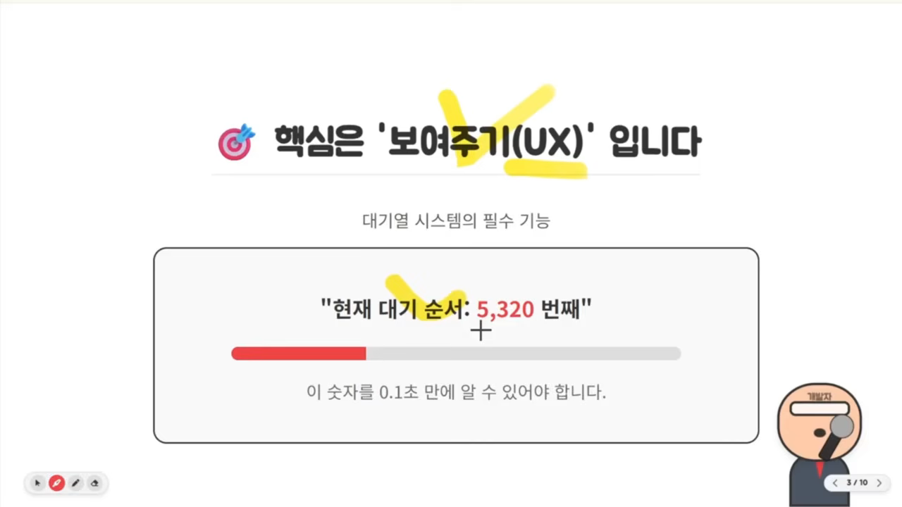
문제 1: MQ에서는 내 순번을 알 수 없어요
MQ는 메시지를 파이프에 흘려 보내고 앞에서부터 꺼내 가는 구조라, 안을 임의로 조회하기 어려워요. 발표자는 어두운 터널에 비유해요. 차들은 분명 줄지어 들어갔지만, 터널 안에서 내가 몇 번째인지는 확인하기 어렵죠. Kafka도 로그를 남기지만 핵심은 '어디까지 읽었냐'는 오프셋이지, 특정 사용자의 위치를 바로 찾는 기능이 아니에요.
반면 ZSet은 큐라기보다 랭킹 보드에 가까워요. 오른쪽 검은 칸에 User_A, User_B, 'ME'가 시각과 함께 순서대로 적혀 있고, 아래에 'ZRANK 명령어로 내 등수를 O(logN) 속도로 즉시 확인 가능'이라고 써 있어요.
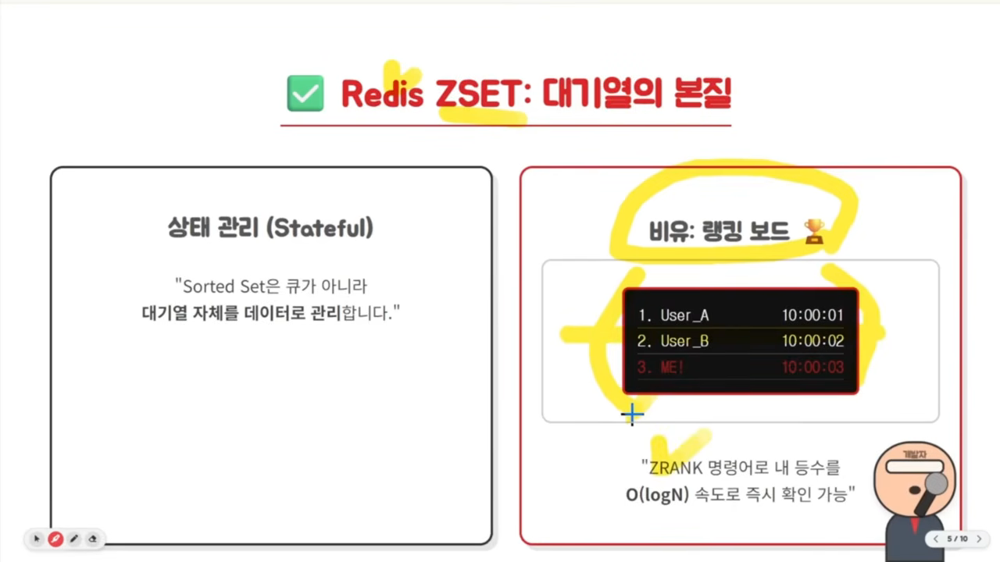
다음 슬라이드는 ZSet이 대기열 운영에 주는 기능을 다섯 칸으로 정리해요. 칸마다 실제 명령어가 검은 띠로 붙어 있어요.
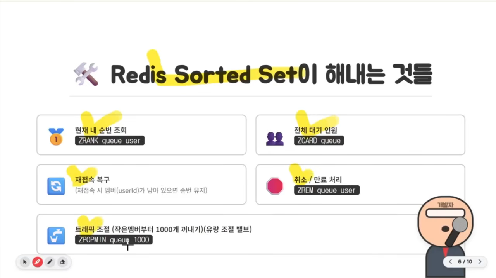
ZPOPMIN이 앞에서 본 스케줄러의 '앞에서부터 N명 꺼내기'예요. 슬라이드는 이것을 유량 조절 밸브라고 불러요.
영상 46:55에서 보기
| 하고 싶은 일 | 슬라이드의 명령 |
|---|---|
| 내 순번 조회 | ZRANK queue user |
| 전체 대기 인원 | ZCARD queue |
| 재접속 복구 | 멤버(userId)가 남아 있으면 순번 유지 |
| 취소·만료 처리 | ZREM queue user |
| 트래픽 조절 (작은 점수부터 1000명) | ZPOPMIN queue 1000 |
문제 2: 중복 클릭(F5 연타)
대기열에서 아주 흔한 장애 원인이 '제발 좀 기다리세요' 하며 클릭을 연타하거나 새로 고침을 반복하는 거예요. 슬라이드 왼쪽의 요청 1·2·3이 MQ로 가면 빨간 배지처럼 메시지가 3개 쌓이고, Redis ZSet에는 1개만 남아요.
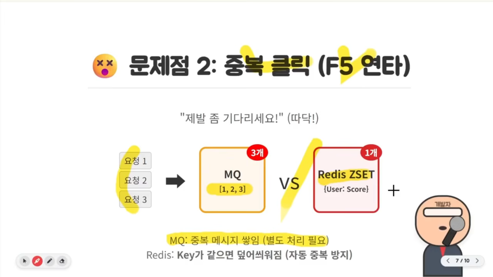
발표자는 이 성질을 멱등성이라고 불러요. 같은 요청을 여러 번 해도 결과가 같으니, 대기열에서 멱등성이 보장되면 트래픽이 훨씬 안정된다고 해요.
문제 3: 중간 이탈(취소)
KTX에는 없던 기능이지만, 기다리다 지친 사용자가 취소할 수 있게 한다면 그 사람을 줄에서 빼야 해요. 왼쪽 MQ(터널)에는 '중간에 낀 차를 빼낼 수 없음'이, 오른쪽 Redis(명단)에는 '특정 유저만 콕 집어서 삭제 가능, ZREM waiting_queue user_b'가 적혀 있어요.
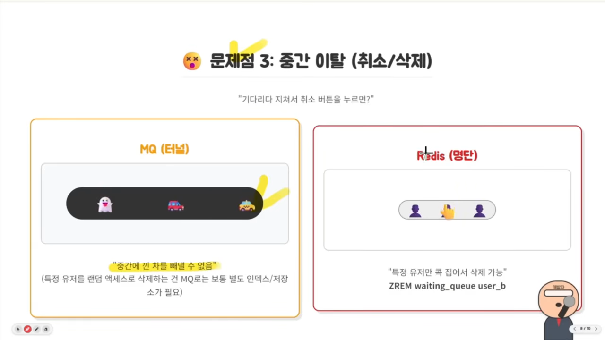
그래서 앞은 Redis, 뒤는 MQ
실무 구조는 둘 중 하나를 고르는 게 아니라 둘을 나눠 써요. 슬라이드의 흐름은 User → Waiting(Redis) → Active(API) → Save(MQ)예요. 줄 서는 앞단은 조회와 관리가 중요하니 Redis, ZPOPMIN으로 통과시킨 뒤 저장하는 뒷단은 처리량과 비동기가 중요하니 MQ예요. MQ 뒤에는 DB 저장, 알림, 로그 같은 후처리가 붙어요.
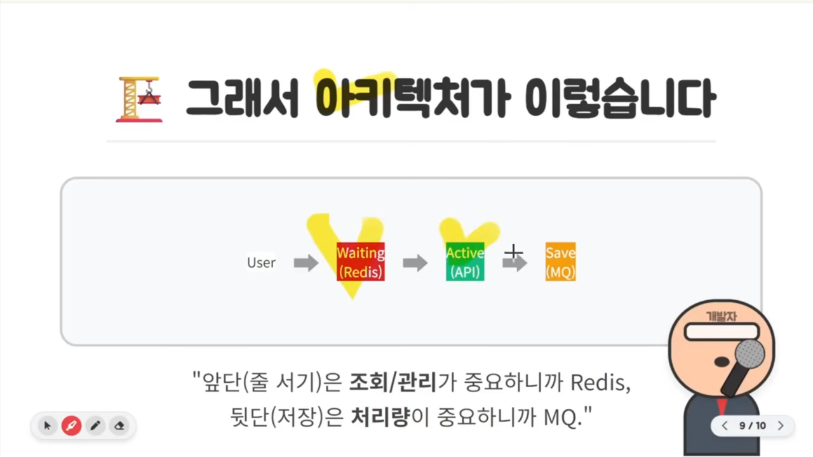
결론 슬라이드는 네 줄로 비교해요. MQ(Kafka/RabbitMQ)는 비동기 처리와 버퍼링, Redis(Sorted Set)는 실시간 랭킹과 상태 관리가 주 목적이에요. 순번 조회, 중복 방지, 임의 취소 세 줄은 모두 Redis 쪽이 '가능'이에요.
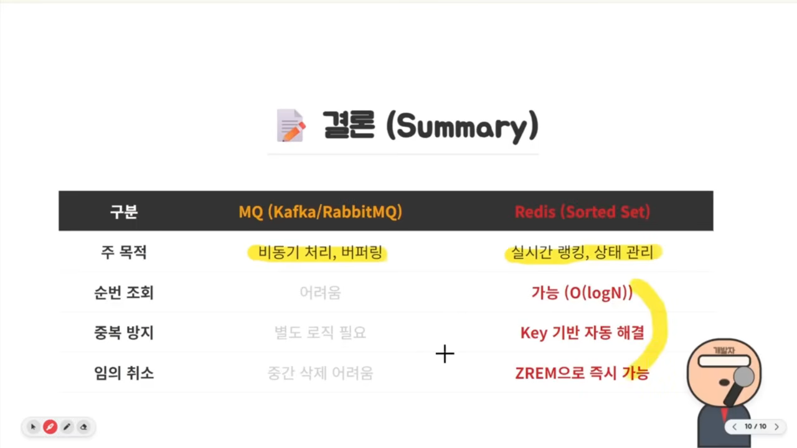
SRT 대기열을 뜯어보면
이번엔 SRT 예매 날이에요. 발표자도 참여했는데 KTX보다는 나았지만 대기는 거의 1만 번째였어요. 이 대기 화면에서 브라우저와 서버가 어떻게 주고받는지 개발자 도구로 들여다봐요.
팝업 위쪽 띠에 '예약 요청 횟수 6회 / 전체 예약 시간 3분 제한'이 적혀 있어요. 가운데에는 '9998명이 접속대기 중이며, 대기 순서에 따라 자동 접속됩니다'가 보여요.
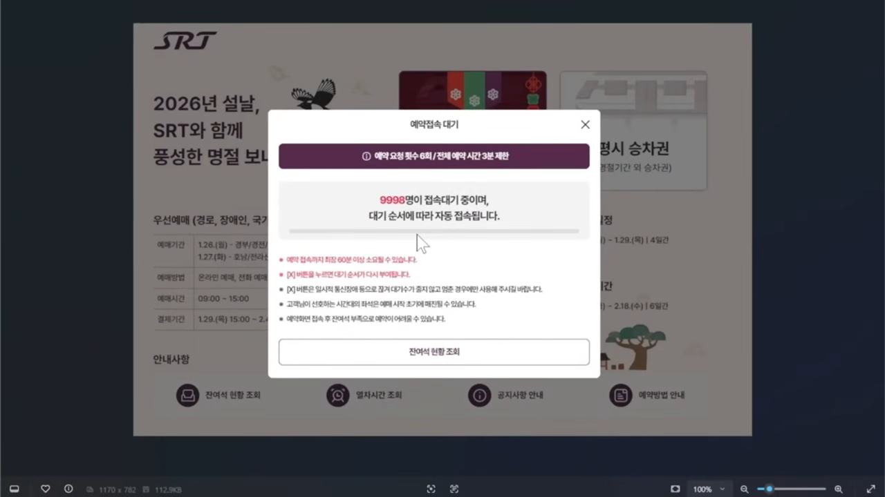
요청: 평범한 HTTP/1.1 GET 폴링
요청 헤더에는 특별한 게 없어요. 맨 위 HTTP/1.1이 눈에 띄는데, 발표자는 오래된 브라우저를 쓰는 이용자를 위한 호환성 때문으로 봐요. 더 중요한 건 아래 두 줄이에요. Host는 nf2.letskorail.com, Referer는 etk.srail.kr로 서로 달라요. 대기열과 예매 사이트가 다른 호스트에서 돈다는 뜻이에요.
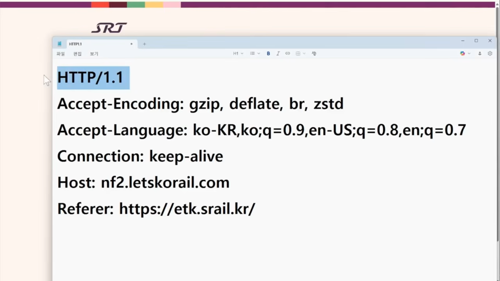
쿼리 파라미터는 보기 쉽게 다른 도구에 옮겨 펼쳐요. opcode 5002, 길게 인코딩된 key, nfid 0, prefix NetFunnel.gRtype=5002, ttl 2, sid service_1 등이 있어요.
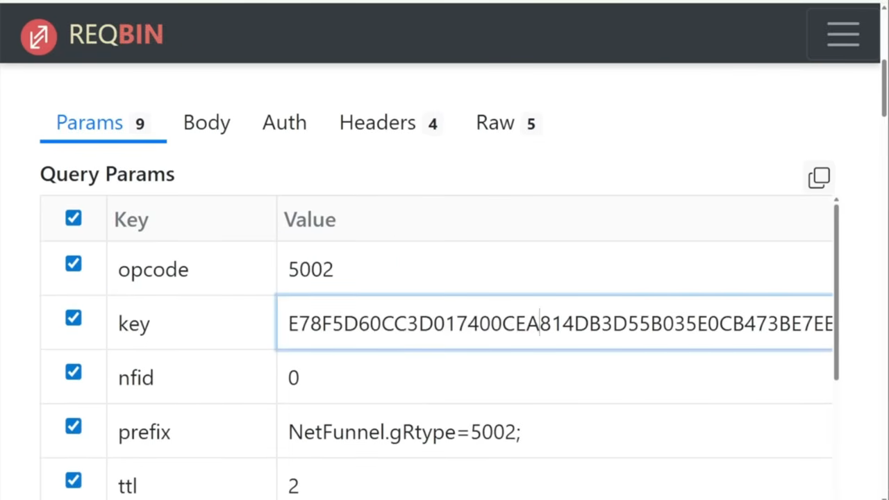
sid는 JWT(JSON Web Token)에서 흔히 쓰는 세션 ID(Identifier)가 아니라 그냥 서비스 ID로 보인다고 짚어요.
응답: JSON이 아니라 자바스크립트
응답 첫 줄의 Content-type이 application/javascript예요. 본문은 NetFunnel.gControl.result에 값을 넣는 코드인데, 그 안에 &nwait=9726, &nnext=1387, &tps=1.371216, &ttl=2가 들어 있어요.
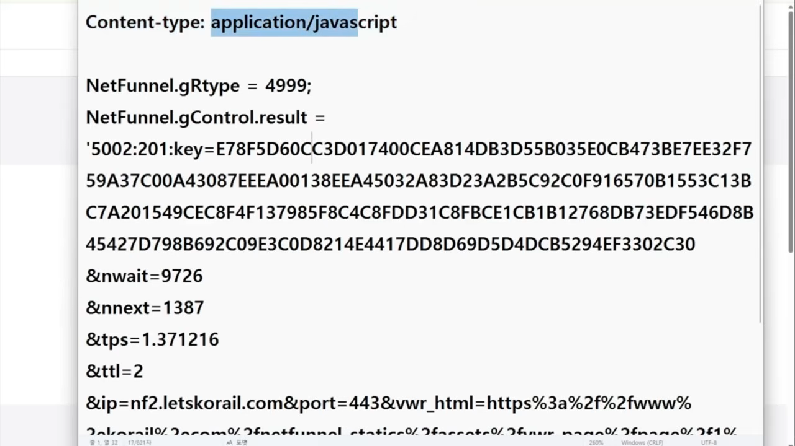
발표자의 해석을 표로 모으면 이래요.
| 값 | 예시 | 발표자의 해석 |
|---|---|---|
nwait | 9726 | 내 앞에 남은 대기자 수 |
nnext | 1387 | 내 뒤의 대기자 수 |
tps | 1.37 | 흔히 아는 초당 트랜잭션이 아니라, 솔루션 내부의 입장 처리율 같은 값 |
ttl | 2 | 다음 폴링까지의 초. 실제로 1초와 2초를 오갔어요. 서버가 폴링 주기를 정해요 |
sticky | nf1 | 한 번 붙은 서버에 계속 붙게 하는 스티키 세션 |
발표자가 만든 정리 슬라이드도 같은 내용을 네 칸으로 보여 줘요. 각 칸에 nwait(9726), nnext(1387), tps(1.37), ttl(2)과 짧은 설명이 붙어 있어요.
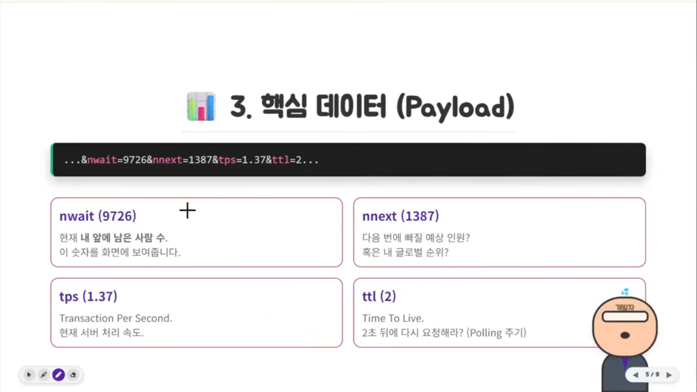
왜 자바스크립트를 돌려줄까요
슬라이드는 '왜 JS를 줄까? (Legacy)' 아래에 두 가지 이유를 적어요. 과거 JSONP(크로스 도메인 회피) 방식의 유산이거나, 클라이언트 로직을 서버가 직접 제어(Execute)하기 위해서예요.
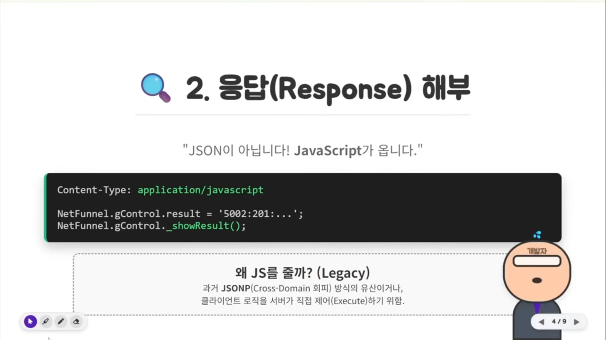
둘째 이유는 이래요. 응답이 실행되는 코드이니, 어떤 함수를 어떤 값으로 부를지 서버가 정해요. 동작 원리 슬라이드는 브라우저(JS(JavaScript))가 NetFunnel 서버에 요청을 보내면 스크립트가 돌아오는 고리를 그려요. 그 아래에는 '서버가 준 JS가 실행되면, 화면 갱신 후 다시 요청(setTimeout)을 건다'고 적혀 있어요.
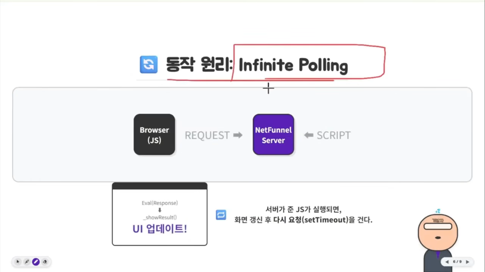
다섯 줄 정리
발표자가 마지막에 적은 정리예요. 1번 'Net퍼널 사용'부터 5번 '응답은 JavaScript'까지 이어져요.
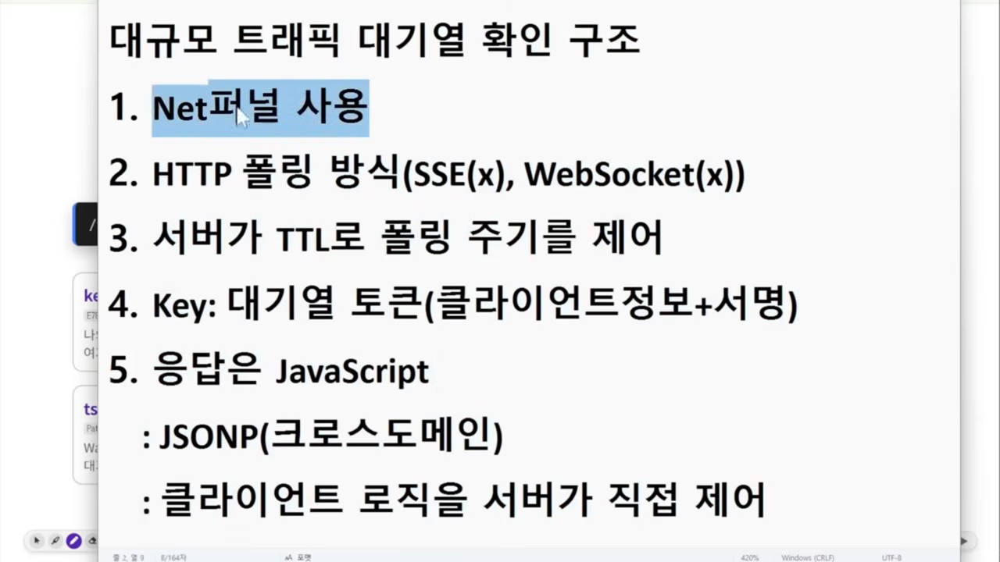
웹소켓 대신 폴링을 쓰는 이유
마지막 편은 본편에 가장 많이 달린 질문을 다뤄요. '실시간이 중요한데 왜 소켓을 안 쓰나요', '짧은 주기의 대량 폴링이 서버에 더 부담 아닌가요'예요. 슬라이드 제목도 '대기열 구현, 소켓 말고 폴링이라고?'예요.
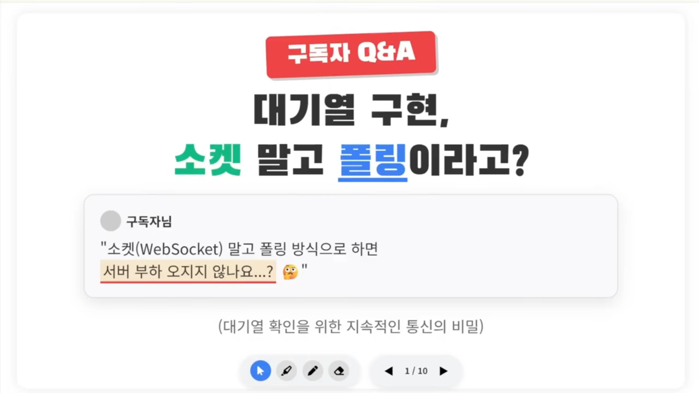
직관과 현실
왼쪽 카드는 우리의 직관이에요. '계속 물어보는(Polling) 건 비효율적이야, 연결해 놓고(Socket) 알림만 받는 게 낫지'. 오른쪽 카드는 50만 명일 때의 현실이에요. '50만 명과 전화 연결을 유지하고 있다고? 서버 메모리가 남아나질 않아'.
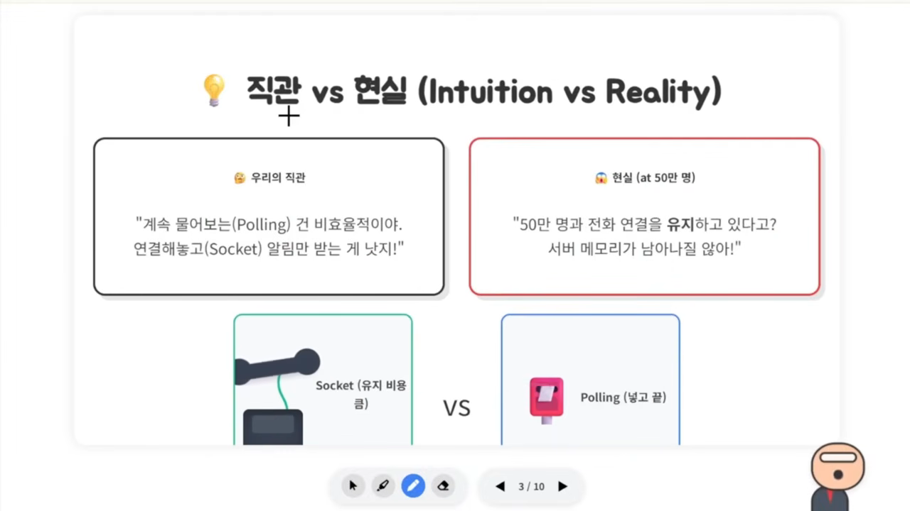
소켓의 숨은 비용
웹소켓은 상태를 유지하는(Stateful) 기술이에요. 슬라이드 오른쪽 '연결 유지(Holding)' 목록에 세 가지가 적혀 있어요.
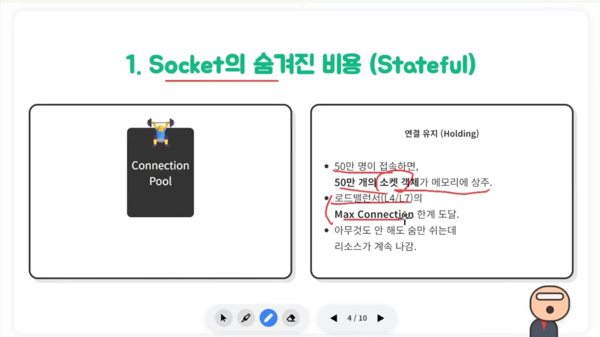
재접속 폭풍
더 무서운 건 네트워크가 1초만 깜빡해도 생기는 일이에요. 슬라이드 아래 상자에 '50만 명이 동시에 연결이 끊기면? 50만 명이 동시에 재접속(Re-connect)을 시도. DDoS 공격과 똑같은 효과로 서버 사망'이라고 적혀 있어요.
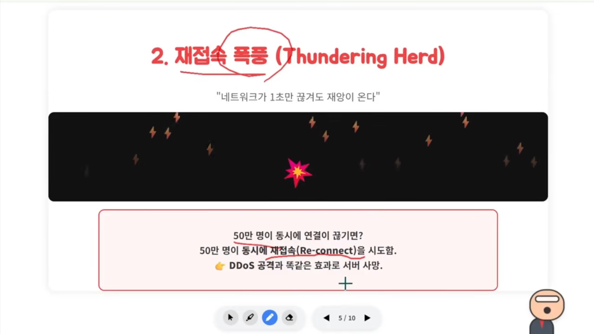
폴링은 묻고 끊어요
폴링은 무상태(Stateless)예요. '제 순서 됐나요' 묻고 답을 듣자마자 연결을 끊어요. 왼쪽 카드는 확장성으로, 연결 정보가 없으니 어느 서버로 요청해도 상관없어 서버 증설이 쉽다고 적어요. 오른쪽 카드는 비용 효율로, 요청을 처리하는 0.01초만 자원을 쓰고 바로 반납한다고 적어요.
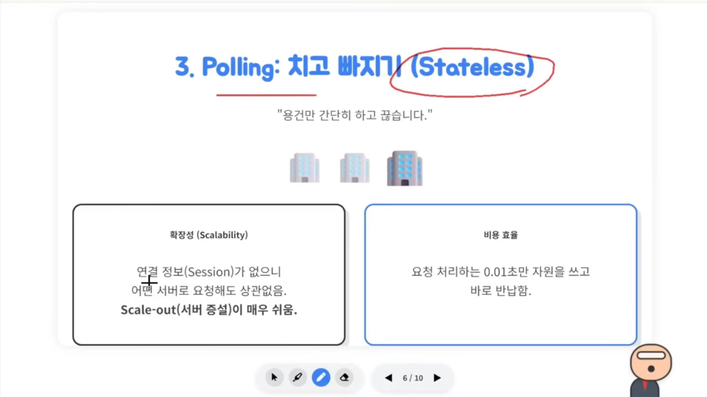
요청 수가 많아도 버티는 이유
'그래도 요청 수가 너무 많지 않냐'는 반론에는 요청 한 건의 무게로 답해요. 시소 그림 왼쪽의 무거운 DB Query와 오른쪽의 가벼운 Redis Get이 대비돼요. 아래 문구는 '대기열 폴링은 DB를 거치지 않는 초경량 요청(Redis 조회)'이라 요청 수가 많아도 건당 비용이 낮다는 거예요.
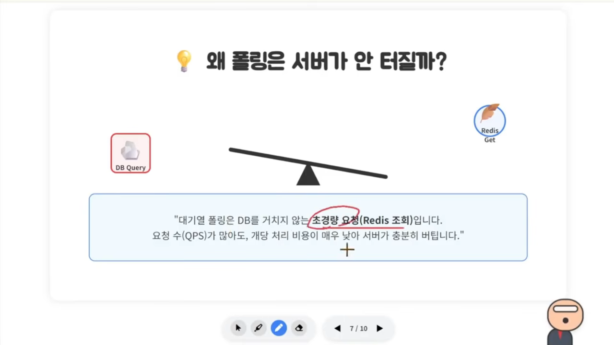
무식한 폴링은 아니에요
그렇다고 1초마다 무작정 묻지는 않아요. 막대그래프는 대기 순번이 줄어들수록 요청 주기를 10초, 10초, 3초, 1초로 줄이는 어댑티브 폴링을 보여 줘요. 오른쪽 위 초록 배지에는 'Real World: SRT/코레일'이라고 적혀 있어요. 아래 두 줄은 서버가 응답의 TTL로 다음 요청 시간을 지정하는 가변 주기와, 3초 ± 0.5초처럼 랜덤 시간을 섞어 요청을 흩는 지터예요.
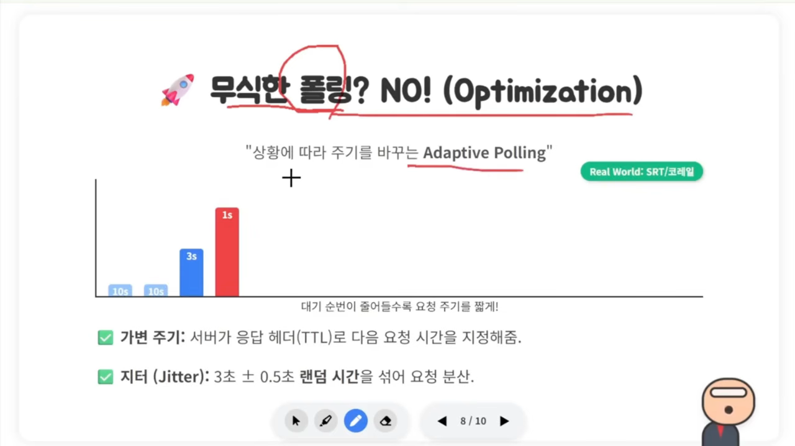
웹소켓이 나쁜 게 아니에요
마지막 비교표는 연결 방식, 서버 부하, 장애 시, 추천 상황 네 줄이에요. 장애 시 웹소켓은 재접속 폭풍 위험, 폴링은 자연스러운 재시도예요. 추천 상황은 웹소켓이 채팅·게임(양방향), 폴링이 대기열(단방향 확인)이에요.
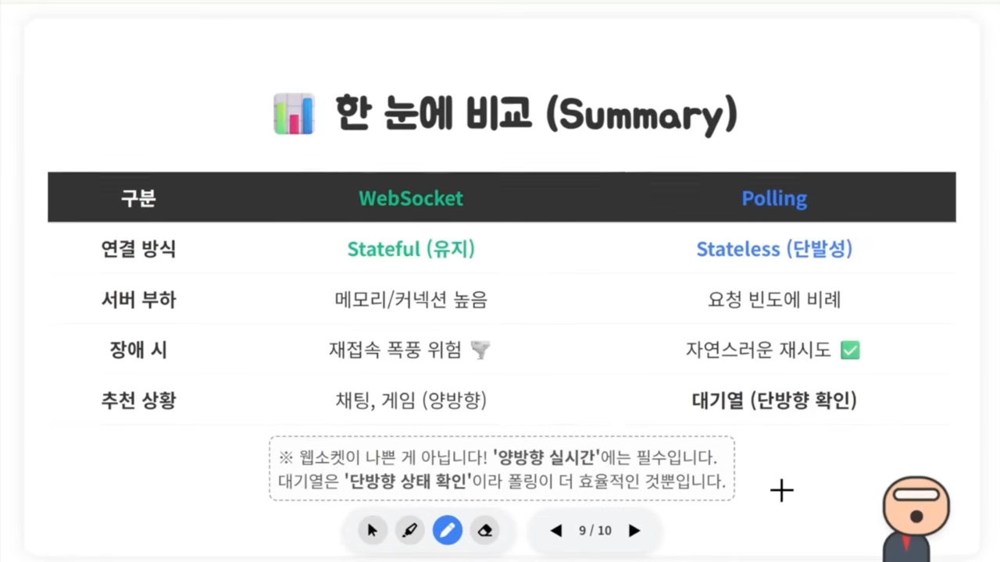
이 초대용량이 환경에서는 연결을 유지하는 비용이 자주 묻는 비용보다 비쌉니다.
— 영상 01:02:54